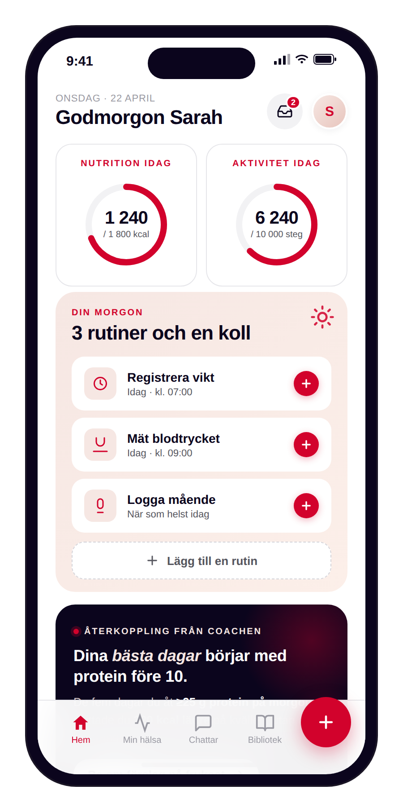
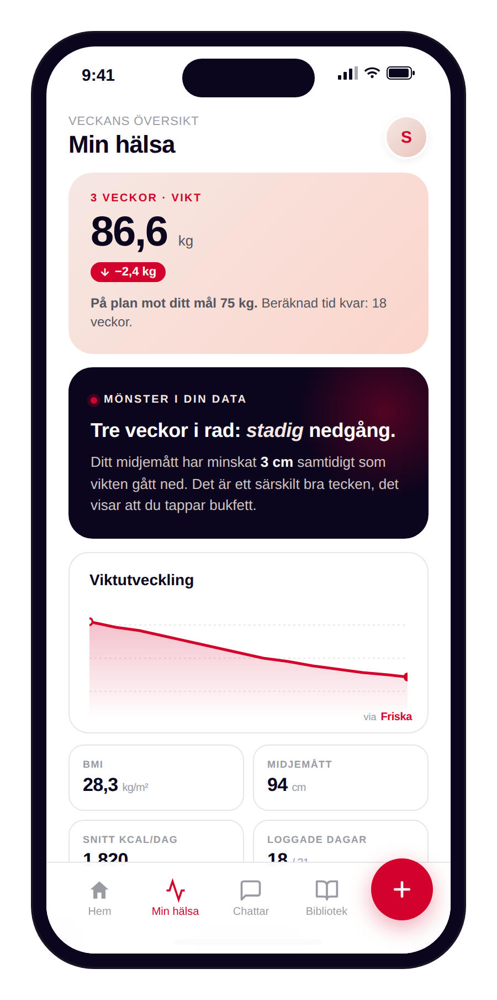

Strategin för det andra benet i Friskas position. Patient Empowering uppnås genom att vi engagerar patienten i sin egenvård. Det är så vi skalar utan att proportionerligt skala vårdgivartid, vilket låter oss förbli prisledare och samtidigt leverera kliniskt utfall och nöjda patienter som rekommenderar oss till andra.
Friskas position vilar på tre ben: Clinically Proven, Patient Empowering och Cost & Price Leader. Det här dokumentet täcker det andra benet, och förklarar hur de tre benen hänger ihop. Patient Empowering är hur vi skalar engagemang — via produkten, datan och AI-stödet — snarare än genom att skala vårdgivartid. Det är den mekanism som låter oss behålla prisledarskapet och samtidigt leverera mätbart kliniskt utfall. Mätbart för att vi följer en North Star: antalet meningsfulla beteenden patienten utför per vecka, vilket i sin tur driver NPS, churn och hälsoutfall.
Friska är Clinically Proven, Patient Empowering och Cost & Price Leader. De tre benen står inte fristående från varandra. Patient Empowering är hur vi skalar engagemang via produkt, data och AI-stöd, istället för att skala genom mer vårdgivartid. Det är den mekanism som låter oss leverera mätbart kliniskt utfall till priset 299 kr/mån. Resultaten vi mäter framgång i — NPS, lägre churn, hälsoutfall — uppnås genom att fler patienter utför fler meningsfulla beteenden mellan kontroller, inte genom fler vårdgivar-timmar.
Vårt primära mått eftersom det går att flytta direkt genom produkten och har kort tidsfördröjning till utfallsmåtten. Det är också måttet på vad patienten faktiskt gör för sin egen hälsa mellan vårdkontakter.
De yttersta måtten på om strategin fungerar. De rör sig långsammare än North Star men är vad som rättfärdigar investeringen och underbygger positionen externt.
Friska finns i två lägen som båda driver MBTs men har olika utgångspunkter och regulatoriska klassning. Open App sänker tröskeln för att börja, Subscription bär behandlingen.
Aktivera passiva användare. Inga regulatoriska hinder, låg friktion.
Egen läkare och sjuksköterska som utreder och behandlar hypertoni och obesitas via både livsstilsintervention och farmakologisk behandling. 299 kr/mån, prisledare i marknaden.
Flywheeln beskriver hur produkten är arkitekterad. En passiv användare utför ett första meningsfullt beteende, vilket genererar återkoppling, vilket gör nästa beteende mer sannolikt. När frekvensen stiger följer utfallsmåtten efter med några veckors till månaders fördröjning. Sambandet mellan loggningsfrekvens och kliniskt utfall är väl belagt i extern forskning (Oviva 2025, Noom 2023). Vår egen data följer samma mönster på övergripande nivå, även om vi ännu inte har publicerade kohortstudier som verifierar sambandet specifikt för Friska.
Patienten utför ett meningsfullt beteende: fotar måltid, mäter blodtryck, loggar mående. Friktion hålls minimal.
Det loggade beteendet ställs mot patientens egen historik (inte mot generiska normer). Bearbetningen kan ske automatiskt via AI, av vårdgivaren, eller direkt visualiseras för patienten att tolka själv.
Återkopplingen kan ta flera former: en AI-genererad insikt ("dina bästa dagar börjar med protein före 10"), en kommentar från vårdgivaren, eller en graf där patienten själv ser ett mönster. Specifik, icke-skuldbeläggande, handlingsbar.
Patienten upprepar beteendet eftersom värdet blev synligt. Vi går från enstaka loggning till rutinmässig användning, vilket är där vi ser samband med utfall.
Vikt, blodtryck, mående rör sig åt rätt håll. Patienten upplever värde, NPS stiger, churn sjunker. Cykeln startar om, med större trovärdighet.
Idag har vi tre MBTs (vikt, blodtryck, midjemått), och majoriteten av våra användare utför noll av dem regelbundet. Strategin är att utöka till sju evidensbaserade MBTs och sänka friktionen för var och en, så att patienten kan agera i sin egen vård också mellan vårdkontakter. Det är denna aktivering som skiljer Friska från att vara en vårdcentral som främst förnyar recept. Receptet är en del av behandlingen, men den långsiktiga effekten kommer från det som händer däremellan. Implementationsordningen är stackrankad efter förväntad nytta för utfallet och teknisk komplexitet.
Primärt utfallsmått. Trendvärdet är viktigare än enskilda värden.
Hypertoni är vanlig komorbiditet. Hemmätning ger trenddata mellan besök.
Midjehöjd-kvot är bättre prediktor än BMI för metabol risk (NICE 2022).
Övergripande input: typ och duration. Steg via Health-import. Ingen GPS, ingen puls. Bredast täckning av befolkningen.
Mående, sömn och mättnad i ett enda flöde. Kritiskt vid GLP-1-behandling, fångar både biverkningar och förändrad aptit.
AI-foto, röst eller streckkod. Loggningsfrekvens är starkaste prediktorn för viktnedgång (Oviva 2025).
Veckodos GLP-1: missade doser ger sämre utfall och fler biverkningar vid återupptag.
Mätningen sker i tre lager. Exposure svarar på om vi når patienten. Meaningful Behavior svarar på om patienten är aktiv i sin egenvård, och är vårt primära mått eftersom det kan flyttas direkt genom produkten. Outcomes svarar på om aktiviteten omsätts i hälsoutfall, nöjdhet och fortsatt användning. De tre lagren följer efter varandra med några veckors till månaders fördröjning, vilket gör att vi kan flytta MBT-frekvensen idag och se utfallsmåtten röra sig efter en period.
När en patients MBT-aktivitet faller under en internt definierad tröskel har vi en ledande indikator på churn. Vi ser det innan patienten faktiskt slutar använda produkten, vilket ger oss en handlingsperiod att stötta tillbaka. Tröskelvärdet är inte ett mål patienten ska sträva efter, det är ett internt verktyg för att rikta åtgärder mot rätt patienter i rätt tid.
Konkreta tröskelvärden, segmenteringar och åtgärdsnivåer kalibreras löpande baserat på data. Två segment är tekniskt motiverade — en patient i aktiv obesitas-behandling har inte samma förväntade aktivitetsnivå som en patient i underhåll eller prevention. Åtgärder vid sjunkande aktivitet sträcker sig från extra empatisk check-in i appen, till att patienten dyker upp i vårdgivarens dashboard, till proaktiv kontakt från vårdteamet.
Det patienten loggar genom Friska har två olika roller beroende på dataslag. Vissa MBTs är direkt kliniskt relevanta och kan efter validering av patient bli en del av journalen. Andra MBTs är wellness-data som hjälper patienten styra sitt beteende men som inte är journalkritiska. Den distinktionen påverkar hur datan visas, hur den behandlas regulatoriskt, och vilken roll den får i en vårdkontakt.
Sätts av vårdgivare inför en bokad kontroll och ingår i den kliniska bedömningen. Vissa data — som blodtrycks- och viktmätningar inför en kontroll — efter patientens validering blir del av journalen.
Sätts av patienten själv, eller initieras av vårdgivare som ett förslag patienten väljer att aktivera. Stödjer beteendeförändring mellan kontroller och tas med in i konsultation som komplement, inte som kritiskt beslutsunderlag.
Skillnaden går mellan typ av data, inte mellan typ av användarläge. Det är värdefullt att förstå för design- och utvecklingsteamet eftersom det styr hur data presenteras, exporteras och hanteras regulatoriskt.
Vikt, blodtryck, midjemått. Avgörande för klinisk bedömning under en kontroll. Patienten validerar mätningen vid besöket innan den läggs till journalen.
Kostregistrering, fysisk aktivitet, egenskattning av mående och sömn. Tas med in i konsultationen för att rikta samtalet men är inte kritisk för den kliniska bedömningen och journalförs inte.
Varje graf finns för att svara på en specifik fråga patienten kan tänkas ställa om sin utveckling. Visualiseringen är hur patienten själv kan dra slutsatser av sin data, vilket är en av tre källor till återkoppling i flywheeln (vid sidan av AI-coach och vårdgivare). Vissa grafer presenterar ett datasätt isolerat. Andra blir mer värdefulla när två eller fler datasätt kombineras — exempelvis vikt mot kostloggning, eller blodtryck mot stressnivå — för att visa relationer som inte syns i de enskilda kurvorna. Patienten ska också kunna dela sin progress externt med Friska-vattenstämpel.
Trendvärdet är primärt utfallsmått. Mållinje + delbar via knapp.
Midjehöjdkvot räknas automatiskt. Bättre prediktor än BMI enligt NICE 2022.
Systoliskt + diastoliskt, hemma-mätningar mellan besök.
Övergripande input + import från Health. Inga splits, ingen puls, ingen GPS.
Veckodos GLP-1: bekräftad / missad / kommande. Varning vid utebliven dos.
Mående, hunger/sug, biverkningar. Kontextualiseras mot vikt och dosdatum.
Vi gör en aktiv avgränsning: Friska är specialiserade i vertikalen viktnedgång och behandling av hypertoni. Vi försöker inte vara den bästa ytan för alla tänkbara hälsodata. Patienter som är djupt engagerade i sömnspårning, fysisk aktivitet eller träning använder hellre Oura, Fitbit, Strava eller liknande som primärt gränssnitt — det är där dessa data hör hemma. Vi importerar deras data och visar den i Friskas app där det är värdefullt för viktnedgångs- och behandlingssammanhang, men vi äger inte deras användarupplevelse. På motsvarande sätt exporterar vi den data där vi har klinisk kontext — vikt, midjemått, blodtryck, mående, medicindos — så att den finns tillgänglig i ekosystemet om patienten vill det.
Vi exporterar det vi har klinisk kontext kring så patientens hälsodata följer med utanför Friska.
Vi importerar det specialiserade appar mäter bättre. Vi äger inte deras gränssnitt, vi använder deras data.
För datapunkter som kan komma från flera källor (vikt, blodtryck) väljer patienten själv vilken som ska vara source-of-truth.
Strukturen följer hur patienten använder appen, inte hur vi internt organiserar funktioner. Hem är dagens utgångspunkt med rutiner, förberedelser och återkoppling. Min hälsa är progress och insikter över tid. Chattar samlar all dialog med vårdteam och AI-coach. Bibliotek är allt redaktionellt innehåll. Plus-knappen är reserverad för MBT-loggning, inte för struktur-skapande.
Patientens dagliga utgångspunkt. Två dagsöversikts-kort i toppen (kalorier och steg mot dagens mål), följt av dagens rutiner, kliniska förberedelser och återkoppling. Optimerad för "har jag varit lyckad idag?". Inbox-ikon i toppen.
Progress och egen data tolkad. Vikt-hero som även rymmer det långsiktiga viktmålet, AI-insikter över längre tid, visualiseringar med Friska-vattenstämpel, mål-detalj med prognosgraf.
All dialog. Två sektioner: vårdteam och AI-coach. Konversationer triggade av insikter eller notiser landar med rätt kontext laddad.
Allt redaktionellt innehåll. Self-study-program, recept, övningar, artiklar. Linjär konsumtion eller serendipitisk bläddring. Vårdgivare kan länka in i chatt.


Vi prioriterar i denna ordning: mätfundamentet först (för att kunna se vad som händer), sedan rutiner och påminnelser (det patienten faktiskt gör), sedan visualisering (det patienten ser och drar slutsatser från), och sist ekosystem-integration (vad andra appar kan bidra med). Inom varje spår är iterationerna stackrankade, inte tidsbestämda.
Foundation
Patientvärde · MBT-prio
Flywheel-fuel
Ekosystem